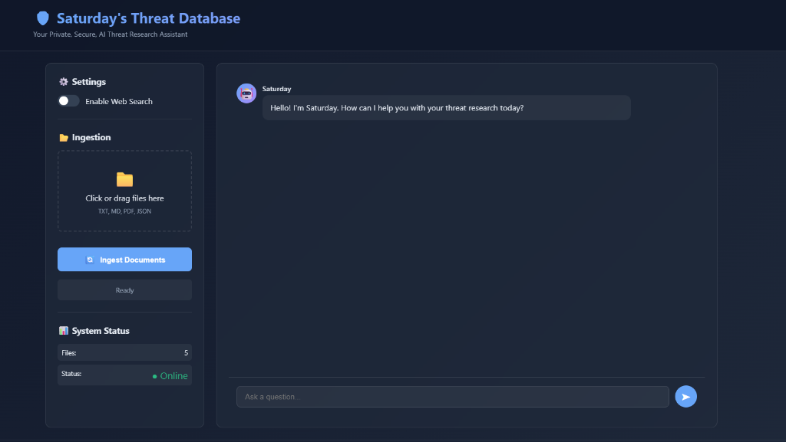

Private Threat Intel Agent with RAG (Saturday)

Saturday is a private, secure, AI-powered research assistant designed specifically for threat intelligence. It leverages local Large Language Models (LLMs) and Retrieval-Augmented Generation (RAG) to provide answers based on your internal datasets (PDFs, STIX, CVEs) without exposing sensitive data to the cloud.
Key Features
- Fully Private: Runs entirely on your local machine using
llama-cpp-python. No data leaves your network. - RAG Engine: Automatically ingests and understands PDF Threat Reports, CVE JSON Records, STIX/TAXII Objects, and Text Notes.
- Smart Routing: The agent intelligently decides the best source for your answer:
- Local Context: Checks your private database first.
- Web Search: Falls back to the web for the latest vulnerabilities (if enabled).
- General Knowledge: Uses the LLM's base knowledge for general queries.
- Web Search Integration: Real-time internet access for up-to-the-minute threat data.
- Modern UI: A beautiful, dark-mode, glassmorphism interface built with FastAPI using html/css/javascript.
System Design
The system is built on a modular architecture designed for privacy and extensibility.
flowchart TD
User[User] -->|"Query"| UI[UI Interface]
UI -->|"Process"| Agent[Agent Core]
subgraph "Decision Engine"
Agent -->|"1. Search"| RAG[RAG Engine]
Agent -->|"2. Fallback"| Web[Web Search]
Agent -->|"3. Generate"| LLM[Local LLM]
end
subgraph "Data Layer"
RAG <-->|"Retrieve"| Chroma[ChromaDB Vector Store]
RAG <-->|"Ingest"| Files[PDFs · JSONs · STIX Files]
end
Web <-->|"Fetch"| Internet[(Internet)]
LLM -->|"Response"| Agent
Agent -->|"Answer"| UI
Components
- Agent (
src/agent.py): The brain of the system. It handles the logic for routing queries, managing chat history, and constructing the context for the LLM. - RAG Engine (
src/rag_engine.py): Manages document ingestion, parsing (PDF/JSON), chunking, and vector retrieval using ChromaDB. - Web Search (
src/web_search.py): Provides real-time search capabilities to supplement local data. - LLM Client (
src/llm_client.py): Interfaces with the local Llama model for inference.